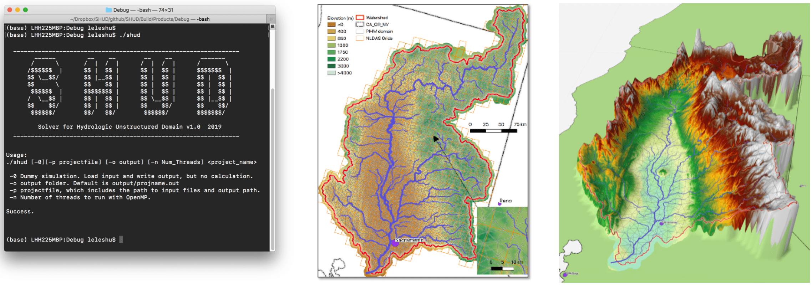
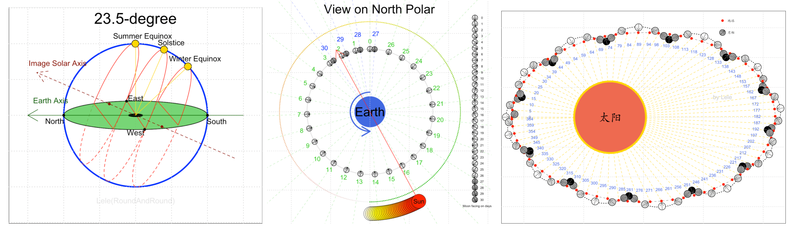

PDF版 中文
英文
水资源工程博士
博士副修计算科学
223 Hoagland Hall
Davis, CA 95616
llshu@ucdavis.edu
lele.shu@gmail.com
简介
1983年生，籍贯陕西。水文学博士，现加州大学戴维斯分校博士后研究员，2017年毕业与美国 宾夕法尼亚州立大学 土木工程系水资源工程专业，副修学位计算科学。分别于兰州大学和中科院寒旱所获得学士和硕士学位。专注于数值方法的分布式水文模型、水文大数据的机器学习、气候/人类活动对水循环的影响和集成模型耦合研究。
研究方向
- 分布式水文模型的数值模拟；有限元、有限差分方法在地学应用
- 空间和水文数据挖掘
- 干旱和洪水灾害预报预警系统
- 土地利用和气候变化对水文环境的影响
- 绿色基础设施、海绵城市、洪水管理
- 从古代文明受气候变化、水循环和旱涝条件的影响
教育经历
- 2012-2017 宾夕法尼亚州立大学 (Pennsylvania State University)，
水资源工程， 博士；
辅修计算科学 (Computational Sciences)
导师：Christopher Duffy.
- 2006-2009 中科院寒旱所， 遥感与地理信息系统，硕士。导师：南卓铜
- 2001-2005 兰州大学，地理信息系统，学士
工作经历及部分成果
2017至今 加州大学戴维斯分校 (University of California, Davis)，博士后研究员
- 加州中央谷地下水和雪水储量再气候变化下的脆弱性研究。加州的四大“水库”——积雪、土壤水、地下水、湖泊，如何在气候波动下为工农业生产生活提供水源。 地中海气候下雨季与作物生长季节错位，如何通过水文预报合理分配水资源。复杂气候和地形的时间空间异质性导致水的时空分布规律
链接
- SHUD v1.0—具有强大的计算能力和清晰的物理意义，模型实现了1) OpenMP和MPI高性能并行计算； 2) 协方差矩阵遗传算法（Coviarance Matrix Adptation Evolutionary Strategy ）的自动模型校准；3)改进的垂直水分运动； 4) 考虑动态土地利用变化； 5) 面向对象化编程；6）灵活的模型耦合和数据接口
|  |
| 图：SHUD模型界面；使用SHUD模拟加州萨克拉门托河流域气候变化引发的地下水和旱涝波动。 |
|  |
| 图：使用RoundAndRound绘制的1)太阳高度角，2）月相计算，3）日地月关系 |
2017至今 宾夕法尼亚州立大学，研究员(兼职)
- 非洲水资源和粮食安全问题(美国国防高级研究计划局资助)。非洲水资源的脆弱性问题，干旱和洪水风险；水灾害对基础设施的影响；可能的干旱和洪水对农业生产的影响；农业受损后，社会稳定性、政治稳定性评估
2012-2017 宾夕法尼亚州立大学，研究助理
- PIHM模型改进
- 宾夕法尼亚绿色基础设施项目(美国环保属EPA)。过度的人类农业和城市扩张，改变了地下水的空间分布模式；森林减少，有利于增加干季河流水量，但同时增加了洪水风险。
- 人类-自然耦合关系(美国自然科学基金NSF)研究项目。 以湖泊为中心的人类活动对水质和水量的影响，以及水环境恶化后如何影响人类决策。
- 古代玛雅城市地下水项目(美国国家自然科学基金NSF)。
土地开发和气候变化同时对于水资源的影响；玛雅人有超高的水利工程设施，可在多年干旱情况下提供水源，但随着土地开发加剧和气候更加干旱，随之而来的水资源枯竭导致的社会矛盾加剧，使玛雅文明最终没落。
- 元胞自动机土地利用变化模型(Cellular Automation Landuse Change Model, CALUC)。
使用元胞自动机分析地理数据数据，预测历史或未来土地利用状况的 R 开发包CALUC。
- NLDAS气象数据下载和转换工具 NLDAS2TS，用于下载、存储和分析全球/全美在分析气象数据(NLDAS, GLDAS, FLDAS等).
- 水文数据服务器HydroTerre (www.hydroterre.psu.edu)的数据处理工具。
2011-2012 奥本大学(Auburn University)，研究助理
2010-2011 北京中资环钻探公司， 项目负责人
2006-2011 中科院寒旱所，研究助理
2005-2006 四川九州集团，工程师
文章
- L. Shu, P. Ullrich, C. Duffy. PIHM++, numeric watershed hydrologic modeling with finite element method. Geoscientific Model Development (已投 2019)
- B. Zhang, Y. Yuan, L. Shu, E. Grosholz, Y. Guo, L. Zhai, A. Hastings, J. Cuda, J. Qiu. Scaling up from plant stress response in greenhouse to landscape scale suitability for the distribution of an invasive species (已投 2019)
- X. Yu, Z. Xu, D. Moraetis, N. Nikolaidis, L. Shu, et al. Coupled surface-subsurface modeling of fresh submarine groundwater discharge of an island in the Mediterranean Sea. Advances in Water Resources (已投 2019)
- L. Shu, P. Ullrich, C. Duffy. Quick automated watershed modeling with the Penn State Integrated Hydrologic Model (PIHM): Essential data, simulation, applications and visualization (Draft 2019)
- L. Shu, C. Duffy. Competitive Lotka-Volterra System Cellular Automata Land Use Change Model. (Draft 2019)
- L. Shu, C. Duffy. Comparison of the simulated spatial distributed water balances by landuse classes in Conestoga Watershed. (Draft 2019)
- L. Shu, C. Duffy. Developing plausible scenarios for the competing impacts of landuse change and climatic change in the Conestoga Watershed: past, present and future. (Draft 2019)
- L. Shu, C. Duffy. Reconstructing the role of landuse change on water yield at the Maya urban center Tikal, Guatemala [700-800 CE]. (Draft 2019)
- D. Garijo, D. Khider, V. Ratnakar, Y. Gil, … L. Shu, … , An Intelligent Interface for Integrating Climate, Hydrology, Agriculture, and Socioeconomic Models , in ACM 24th International Conference on Intelligent User Interfaces (IUI’19), 2019, p. 111–112.
- X. Yu, A. Lamacova, L. Shu, C. Duffy, P. Krám, J. Hruška, T. White, K. Lin. (2019). Data rescue in manuscripts: a hydrologic modelling study example. Hydrological Sciences Journal
- N. Ward, L. Shu, et al. Integrating fast and slow processes is essential for simulating human-freshwater interactions. Ambio (2018)
- K.M. Cobourn, … L. Shu, … From concept to practice to policy: modeling coupled natural and human systems in lake catchments. Ecosphere, 8. 2018
- 舒乐乐, 南卓铜, 基于类Twitter服务的低成本近实时野外监测数据获取系统, 冰川冻土, 2010, 32(5): 976-981
- 南卓铜，舒乐乐，赵彦博，李新, 丁永建. 集成建模环境研究及其在黑河流域的初步应用. 中国科学E. 2011, 41(8): 1043—1054..
- 冯克庭，南卓铜, 赵彦博，舒乐乐. 基于插件的集成建模环境原型开发研究. 遥感技术与应用. 2008, 23(5):587-591
会议报告
- 2019.12, Quick and reproducible automated watershed modeling with the SHUD: Essential data, simulation, applications and visualization, AGU, San Francisco, California, USA
- 2018.12 Model simulated spatial distribution and the variation of ground water level in
- Sacramento Watershed, California from 1985 to 2017, AGU, Washington, DC, USA
- 2018.04 Groundwater and Snow Storage Simulation with PIHM, California Water& Environmental Modeling Forum, Sacramento, California, USA
- 2017.12 Coupling Cellular Automata Land Use Change with Distributed Hydrologic models, AGU, New Orleans, Louisiana, USA
- 2015.12 Catchment hydrological change from soil degradation — A model study for assessing urbanization on the terrestrial water cycle AGU, San Francisco, California, USA
- 2015.03 Reconstructing the role of landuse change on water yield at the Maya urban center Tikal, Guatemala [700-800 AD], Penn State Graduate Exhibition, University Park, Pennsylvania, USA
- 2014.12 Reconstructing the role of landuse change on water yield at the Maya urban center Tikal, Guatemala [700-800 AD], AGU, San Francisco, California, USA
- 2014.10 PIHM and PIHMgis workshop. Global Lake Ecological Observatory Network (GLEON) 16, Orford, Quebec, Canada
- 2014.09 Green Infrastructure and Stormwater Management SAC Meeting
2013.12 Center for Green Infrastructure and Stormwater Management: Urbanization-driven hydrological process change in Lancaster of Pennsylvania,AGU, San Francisco, California, USA
科研项目
- 2019 Knowledge-Guided Machine Learning: A Framework to Accelerate Scientific Discovery
- 2018 Model Integration through Knowledge-Rich Data and Process Composition
- 2017 An Integrated Evaluation of the Simulated Hydroclimate System of the Continental US
- 2017 Advanced Statistical-Dynamical Downscaling Methods and Products for California Electrical System Climate Planning
- 2015 CNH-L: Linking Landuse Decision Making, Water Quality, and Lake Associations to Understand Human-Natural Feedbacks in Lake Catchments
- 2013 Land, Water, and Territory: A 3,000-Year Study of Niche Construction and Cultural Evolution in the Tikal National Park, Guatemala
- 2012 NSF Hydrologic and Water Quality Modeling for Green Infrastructure
- 2009 中国科学院知识创新工程重要方向项目群“地表过程集成系统研究”项目“地表过程建模环境和模型集成研究”
- 2008 黑河联合遥感实验 (HiWATER)
- 2008 科技部863自由探索课题“基于科学模型和三维游戏体验的黑河流域水土资源可持续发展决策支持系统”
- 2006 基于GIS的黑河流域水文水资源集成建模环境研究
技能
- 编程: ◦ C/C++ ◦ R ◦ Java ◦ Python ◦ Shell ◦ Matlab/Octave/SciLab ◦ Fortran ◦ Qt
- 专业: ◦ SHUD/PIHM ◦ ArcGIS/GRASS GIS/QGIS ◦ SWAT ◦ HYDRUS ◦ HEC-RAS ◦ PAWS/PRISM
可授课程
- 水文学： 水文基本过程和各过程的计算方法。
- 地理信息系统： GIS基础理论，GIS工具。使用QGIS和GRASS GIS.
- 地球科学的数学方法：主讲有限差分算法求解常/偏微分方程
- 数据挖掘、机器学习：使用数据挖掘方法解决自然科学问题，包括数据挖掘方法的编程。
- R/Python编程： 使用R/Python实现自然科学中的数据读取、绘图和分析。
- 数据结构与算法： 计算机编程语言中如何组织数据和高效计算。使用C和C++作为编程语言。
- 有限差分、有限元、边界元方法：如何利用三种方法解常微分方程，以及评价方法稳定性、精确性和收敛性。